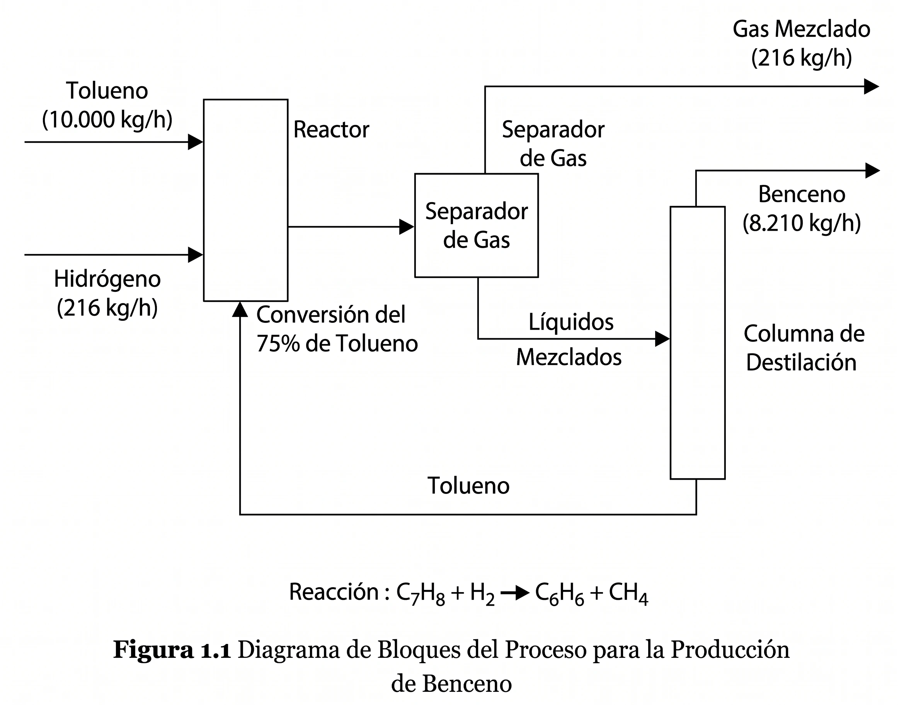
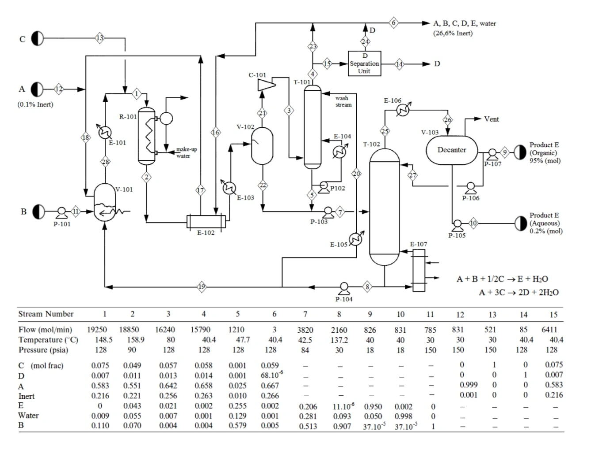
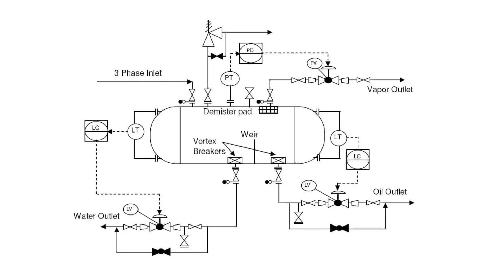

Los diagramas de ingeniería como lenguaje de la profesión
Por qué los ingenieros de proceso no describen sus plantas: las dibujan. Y por qué leer ese dibujo con fluidez es una de las primeras destrezas de la disciplina.
Una refinería de tamaño medio reúne miles de equipos y decenas de miles de líneas de proceso. Ningún texto corrido sostiene esa cantidad de relaciones simultáneas sin volverse ilegible. La ingeniería química resolvió el problema de la única manera que funciona: dejó de contar el proceso y empezó a dibujarlo.
En esta lectura
A lo largo del texto encontrará marcadores verdes numerados como este. Pase el cursor por encima (o tóquelo) y aparecerá la fuente completa. El listado ordenado vive al final, en Referencias, y los documentos normativos citados se pueden abrir desde la sección 5.
1. Un proceso no cabe en un párrafo
Intente describir una planta de destilación con palabras. Tendría que enumerar cada bomba, cada intercambiador, cada columna, cada válvula de control, y luego explicar en qué orden se conectan, qué corriente entra en qué equipo, a qué temperatura y a qué presión. Una refinería de tamaño medio reúne miles de equipos y decenas de miles de líneas de proceso. Ningún texto corrido sostiene esa cantidad de relaciones simultáneas sin volverse ilegible. El problema es viejo y la ingeniería química lo resolvió de la única manera que funciona: dejó de contar el proceso y empezó a dibujarlo.
La Lectura 01 respondió qué son las operaciones unitarias y cómo nació la disciplina alrededor de esa idea. Esta lectura responde la pregunta complementaria, la que aparece apenas el estudiante intenta diseñar algo: ¿cómo se comunica un proceso? La respuesta es que los ingenieros de proceso no describen sus plantas en prosa. Las representan en diagramas que obedecen reglas compartidas, y esos diagramas funcionan como un idioma. Quien no lo lee con fluidez queda fuera de la conversación técnica, igual que un músico que no lee partituras queda fuera de la orquesta.
“El diagrama de flujo es el documento central en el diseño de procesos.
Towler y Sinnott, Chemical Engineering Design (2021)
La tesis de esta lectura es directa. Los diagramas de ingeniería no son una herramienta de dibujo que se aplica al final, cuando el diseño ya está hecho. Son el medio donde el diseño ocurre. Towler y Sinnott lo dicen sin rodeos: el diagrama de flujo es el documento central del diseño de procesos, y como es el documento definitivo sobre la planta, su presentación debe ser clara, completa y exacta. Turton y sus colegas son aún más enfáticos sobre uno de esos diagramas en particular, el diagrama de flujo de proceso, al que llaman el documento individual más importante para el ingeniero químico o de proceso.
Esta lectura no le pide memorizar símbolos. Le pide entender por qué existen tres tipos de diagrama, qué decide cada uno y por qué leerlos es una destreza que se entrena. El catálogo de símbolos lo consultará toda su vida en la norma; el criterio para leerlos lo construye usted.
2. Por qué una disciplina técnica inventa un lenguaje visual
Toda disciplina técnica que madura termina construyendo una representación gráfica estandarizada. La arquitectura tiene sus planos, con convenciones precisas para muros, puertas y cotas. La electrónica tiene sus esquemas, donde una resistencia y un capacitor se reconocen al instante en cualquier país. La música escribe sus notas en un pentagrama que un intérprete de Bogotá y otro de Osaka leen igual. El patrón se repite porque responde a una necesidad común: cuando un sistema tiene demasiadas partes interconectadas, el lenguaje natural falla y hace falta un código visual que comprima la información y elimine la ambigüedad.
La ingeniería de procesos llegó tarde a esa convención, y la razón es histórica. Durante la primera mitad del siglo XX, cuando la disciplina apenas consolidaba su identidad alrededor de las operaciones unitarias, cada empresa dibujaba sus procesos a su manera. Un símbolo de bomba en una compañía podía significar otra cosa en la planta vecina. Esa fragmentación tenía un costo real: un diagrama que el autor entendía perfectamente resultaba opaco para el contratista que debía construir la planta, para el inspector que debía aprobarla y para el operador que debía manejarla.
La estandarización corrigió eso, y conviene verla como un hito disciplinar por derecho propio, no como un trámite administrativo. El primer paso grande llegó desde la instrumentación. La Instrument Society of America, fundada el 28 de abril de 1945, publicó en 1949 su práctica recomendada RP-5.1, el primer intento serio de fijar símbolos para los instrumentos de medición y control. Ese documento creció hasta convertirse en la norma ANSI/ISA-5.1, revisada en 1984 y actualizada en ediciones posteriores, que define el alfabeto de símbolos y etiquetas con que se representa cada sensor, controlador y válvula en un diagrama. Del lado británico, la norma BS 1553 fijó en 1977 los símbolos gráficos para sistemas de tubería y equipos de planta de proceso. Y la convergencia internacional llegó con la norma ISO 10628, que estableció las reglas generales para los diagramas de flujo de plantas de proceso y, en sus partes posteriores, el conjunto de símbolos gráficos comunes.
Línea de tiempo de la estandarización
El efecto de estas normas no fue uniformar el dibujo por gusto del orden. Fue volver el diagrama transferible. Un P&ID elaborado bajo ISA-5.1 puede leerse en una firma de ingeniería de Houston, en una constructora de Medellín y en una planta de operación en Singapur, porque las tres partes comparten el mismo diccionario. El diagrama dejó de ser una nota privada del diseñador y se convirtió en un contrato técnico entre todos los que tocan el proyecto.
3. Tres niveles de representación, no tres dibujos distintos
El error más común del principiante es ver el diagrama de bloques, el diagrama de flujo de proceso y el diagrama de tubería e instrumentación como tres formatos sueltos que se eligen según la ocasión. No lo son. Forman una progresión de abstracción, una misma planta vista con tres aumentos distintos. Cada nivel añade detalle y reduce la libertad de interpretación. El primero cabe en una servilleta; el último necesita decenas de planos. Turton y sus colegas estructuran su tratamiento del tema exactamente así, como diagramas que representan el proceso a diferentes escalas.
3.1 · El diagrama de bloques: el nivel conceptual
El diagrama de bloques es el nivel conceptual. Sirve para discutir la lógica del proceso con quien no necesita el detalle: la gerencia que decide si el proyecto avanza, el equipo que evalúa la viabilidad de una ruta química frente a otra. Su virtud es que cabe en la cabeza de un vistazo. Su límite es que no permite calcular casi nada; una caja que dice "separación" no dice cómo se separa ni cuánta energía cuesta.

3.2 · El diagrama de flujo de proceso: el corazón del diseño
Aquí está el corazón del diseño, y por eso el diagrama de flujo de proceso merece la mayor atención del estudiante. Cada bloque se abre y revela los equipos que lo componen: la columna, el rehervidor, el condensador, las bombas, los intercambiadores. Cada corriente lleva su número y, en la tabla de corrientes que acompaña al diagrama, su caudal, su composición, su temperatura y su presión. El PFD es el lugar donde el balance de materia y energía se hace visible y donde se leen los resultados de la simulación del proceso. Cuando un ingeniero dice que está diseñando un proceso, en buena medida está construyendo y refinando un PFD.

3.3 · El diagrama de tubería e instrumentación: la realidad física
El diagrama de tubería e instrumentación es el nivel de la construcción y la operación. No omite nada físico: toda válvula, toda línea con su diámetro y material, todo instrumento con su etiqueta normalizada, todo lazo de control completo. Es el documento sobre el que se hace el análisis de riesgos de proceso, el HAZOP, porque solo a ese nivel de detalle se pueden rastrear los modos de falla. Es también el plano que el contratista usa para montar la planta y el que el operador consulta cuando algo se sale de lo previsto.

Una sola operación deja ver la progresión. Tome la separación de una mezcla por destilación. En el diagrama de bloques aparece como una caja rotulada "separación", conectada por una flecha al bloque de reacción que la antecede. En el diagrama de flujo de proceso esa caja se abre: surge la columna con su número de etiqueta, el rehervidor que aporta calor en el fondo, el condensador que retira calor en la cabeza, el tambor de reflujo, las bombas, y las corrientes de alimentación, destilado y fondos, cada una con su caudal, su composición y sus condiciones en la tabla de corrientes. En el diagrama de tubería e instrumentación ese mismo tren se vuelve físico hasta el último detalle: el controlador de nivel del tambor de reflujo, la válvula que regula el reflujo, el lazo de temperatura del fondo, los diámetros de línea, las válvulas de alivio. El mismo equipo, tres veces, con tres propósitos. Quien confunde los niveles dibuja un lazo de control en un diagrama de bloques, donde no aporta nada, o presenta una caja vacía donde hacía falta una tabla de corrientes.
Tabla 1. Los tres niveles de representación de un proceso, comparados por propósito, audiencia, contenido y etapa del proyecto. Elaboración propia a partir de Turton et al. (2018) y Towler y Sinnott (2021).
| Criterio | Bloques (BFD) | Flujo de proceso (PFD) | Tubería e instrumentación (P&ID) |
|---|---|---|---|
| Propósito | Mostrar la lógica global del proceso | Definir el diseño: equipos, corrientes, balance | Especificar la planta física para construir y operar |
| Audiencia | Gerencia, evaluación de viabilidad | Ingenieros de proceso | Ingeniería de detalle, construcción, operación, seguridad |
| Contenido mínimo | Bloques de secciones y flechas de flujo | Equipos principales, corrientes numeradas, caudales, composiciones, condiciones, lazos de control mayores | Toda tubería, válvula e instrumento con etiqueta; lazos de control completos |
| Etapa del proyecto | Concepto y viabilidad | Diseño básico o de proceso | Ingeniería de detalle |
El valor de entender esto como una progresión, y no como tres opciones, es práctico. Un diagrama de bloques con pretensiones de P&ID es inútil porque promete un detalle que no tiene. Un P&ID usado para explicarle el proceso a un gerente lo ahoga en información irrelevante para su decisión. Elegir el nivel correcto es la primera competencia comunicativa del ingeniero de proceso: hablarle a cada audiencia con el aumento que necesita.
4. Lo que el PFD le exige al ingeniero
Hay una idea peligrosa que conviene desmontar temprano. El estudiante suele imaginar que el diagrama de flujo de proceso es un dibujo que se hace al final, una vez terminados los cálculos, para presentar bonito lo que ya se sabía. Es exactamente al revés. El PFD es donde las decisiones de diseño se toman y quedan fijadas. La selección de equipos, el orden de las operaciones, los puntos de reciclo, las condiciones de cada corriente: todo eso se decide dibujando y se inscribe en el diagrama. El PFD no fotografía el diseño. Lo contiene.
De ahí se sigue una distinción que muchos cursos pasan por alto. Leer un PFD y construir un PFD son destrezas distintas, y ninguna se aprende sola. Leer significa recorrer el diagrama y reconstruir en la cabeza qué le pasa a cada sustancia: por dónde entra el reactivo, dónde reacciona, cómo se separa el producto, qué se recicla y qué se descarta. Turton dedica un capítulo entero a esta destreza, la de rastrear los compuestos a través del diagrama, porque es la que convierte un dibujo en una comprensión del proceso. Construir significa lo contrario: partir de un objetivo, el producto y su pureza, y decidir la secuencia de operaciones que lo logra, plasmándola corriente por corriente.
Un estudiante puede saber dibujar un símbolo de columna y aun así no entender qué hace la columna en el proceso. Y al revés: puede entender la teoría de la destilación y bloquearse al traducirla en un diagrama coherente. Las dos destrezas se entrenan por separado y las dos se evalúan en el proyecto del curso. No basta con que el diagrama se vea bien; tiene que ser correcto y tiene que poder explicarse.
Construir un PFD bien tiene además una gramática concreta que conviene conocer desde ahora. Cada equipo recibe un símbolo, un nombre y una etiqueta única con un formato del tipo XX-YZZ A/B, donde las letras indican el tipo de equipo y los números la sección y el ítem: P-101 A/B nombra dos bombas en paralelo de la sección 100, una en operación y otra de respaldo. Cada corriente se numera, y su caudal, composición, temperatura y presión viven en la tabla de corrientes al pie del diagrama, donde un flujo despreciable se marca como "traza" y un componente ausente como "nil" o cero, nunca con una casilla en blanco. La regla es explícita: se documentan todas las corrientes, incluso cuando su composición no cambia, precisamente para que el lector no tenga que adivinar. Lo que para el autor resulta evidente puede no serlo para el contratista que lee el diagrama seis meses después.
Aquí está la conexión directa con el proyecto de este curso. El entregable central no es una ecuación suelta ni una tabla de resultados aislada. Es un diagrama de flujo de proceso coherente, acompañado de su tabla de corrientes y respaldado por un balance de materia y energía que cierre. Cuando usted presente su proceso, lo presentará en un PFD, y la primera prueba de que entiende su propio diseño será su capacidad de recorrer ese diagrama y explicar, corriente por corriente, por qué cada equipo está donde está y qué condiciones lleva cada flujo. Un PFD que el autor no sabe defender no está terminado, por más limpio que se vea.
Conviene además entender el PFD como un documento vivo dentro del proyecto. No se dibuja una vez. Se revisa cuando la simulación arroja un caudal distinto al supuesto, cuando un balance no cierra y obliga a reconsiderar un reciclo, cuando una decisión sobre un equipo cambia las condiciones aguas abajo. El diagrama acompaña al diseño en toda su evolución y registra su estado en cada momento. Por eso Towler y Sinnott insisten en que debe ser exacto y completo: cualquier persona del equipo que lo consulte debe poder confiar en que refleja la versión actual del proceso, no una idea ya superada.
5. La simbología es una convención, no una ley natural
Falta deshacer un último malentendido, breve pero importante. El principiante tiende a tratar los símbolos como si fueran verdades fijas, un catálogo único que basta memorizar una vez. No lo son. Los símbolos son acuerdos, y como todo acuerdo, varían según quién lo firme. ISO 10628 propone un conjunto de símbolos; ANSI/ISA-5.1 propone otro para la instrumentación; BS 1553 tiene los suyos. Una empresa de ingeniería puede mantener, además, su propio estándar interno, heredado de décadas de proyectos, que se aparta en detalles de cualquier norma publicada.
Esto no es un defecto del sistema. Es la naturaleza de un lenguaje técnico que creció en lugares distintos y en épocas distintas. ISO 10628 predomina en Europa, BS 1553 nació británica pero sus símbolos se extendieron por toda la práctica industrial, y herramientas de dibujo como Visio incorporan sus propias bibliotecas. El contexto, además, desambigua lo que el símbolo solo no alcanza a fijar: un "mezclador" puede ser un mezclador en línea, un tanque agitado o un agitador dentro de un recipiente, y es el símbolo preciso, leído junto a la leyenda, lo que revela la intención del diseñador. La consecuencia práctica es clara: la destreza que importa no es memorizar un catálogo, sino saber leer la leyenda de cualquier diagrama y adaptarse a ella. Por eso todo plano profesional incluye su propia leyenda y su cuadro de símbolos. Ese cuadro existe precisamente porque nadie puede dar por supuesto que el lector comparte exactamente sus mismas convenciones.
5.1 · El catálogo, por familias
Para que vea de qué tamaño es el "diccionario" y cómo se organiza, esta galería recorre el repertorio de símbolos de equipo agrupado en cinco familias. No los memorice: recórralos, reconózcalos y, cuando los necesite, vuelva a la norma. Cambie de familia con las pestañas o con las flechas.
Símbolos adaptados de Towler y Sinnott, Chemical Engineering Design (2021), capítulo 2. Las letras corresponden a las etiquetas de cada lámina.
5.2 · Las normas, accesibles
El criterio para leer un diagrama lo construye usted; el detalle de cada símbolo lo fija la norma. Estos son los documentos normativos y el capítulo de referencia citados en esta lectura. Ábralos cuando una leyenda le plantee una duda.
El estudiante que internaliza esto deja de frustrarse cuando un diagrama nuevo no coincide con el que aprendió. En lugar de buscar el símbolo "correcto", busca la leyenda y la lee. Esa actitud, leer las reglas antes de leer el contenido, es transferible a cualquier norma técnica que encuentre en su carrera, no solo a los diagramas de proceso.
6. Conclusiones
Tres ideas para llevarse de esta lectura.
La primera: los diagramas de ingeniería son el lenguaje nativo del diseño de procesos, no una herramienta accesoria. Un proceso industrial tiene demasiadas partes interconectadas para describirse en prosa, y la disciplina resolvió ese problema con un código visual estandarizado. La estandarización, lograda a lo largo del siglo XX con normas como ISA-5.1, BS 1553 e ISO 10628, fue lo que volvió el diagrama transferible entre quien lo diseña, quien lo construye y quien lo opera.
La segunda: el diagrama de bloques, el de flujo de proceso y el de tubería e instrumentación no son tres formatos rivales, sino tres niveles de un mismo lenguaje, ordenados por detalle creciente. Saber cuál usar para cada audiencia y cada etapa es ya una competencia profesional. El PFD ocupa el centro de esa escala y concentra el trabajo del ingeniero de proceso.
La tercera: leer y construir diagramas son destrezas distintas que se entrenan por separado, y ambas son el núcleo del proyecto de este curso. Su PFD no será un dibujo decorativo al final del informe; será el lugar donde su diseño existe y la prueba de que lo entiende. Y como la simbología es convención y no ley, la habilidad duradera no es memorizar símbolos, sino aprender a leer la leyenda de cualquier diagrama que la profesión ponga delante de usted.
7. Referencias
Pase el cursor por cualquier marcador del texto para ver la fuente sin perder el hilo. Aquí está el listado completo, en orden alfabético.
- ANSI/ISA. (2009). ANSI/ISA-5.1-2009: Instrumentation symbols and identification. International Society of Automation.
- British Standards Institution. (1977). BS 1553-1:1977: Specification for graphical symbols for general engineering — Piping systems and plant. BSI.
- International Organization for Standardization. (2014). ISO 10628-1:2014: Diagrams for the chemical and petrochemical industry — Part 1: Specification of diagrams. ISO.
- International Organization for Standardization. (2012). ISO 10628-2:2012: Diagrams for the chemical and petrochemical industry — Part 2: Graphical symbols. ISO.
- Towler, G., & Sinnott, R. (2021). Chemical engineering design: Principles, practice and economics of plant and process design (3.ª ed.). Elsevier.
- Turton, R., Shaeiwitz, J. A., Bhattacharyya, D., & Whiting, W. B. (2018). Analysis, synthesis, and design of chemical processes (5.ª ed.). Pearson.